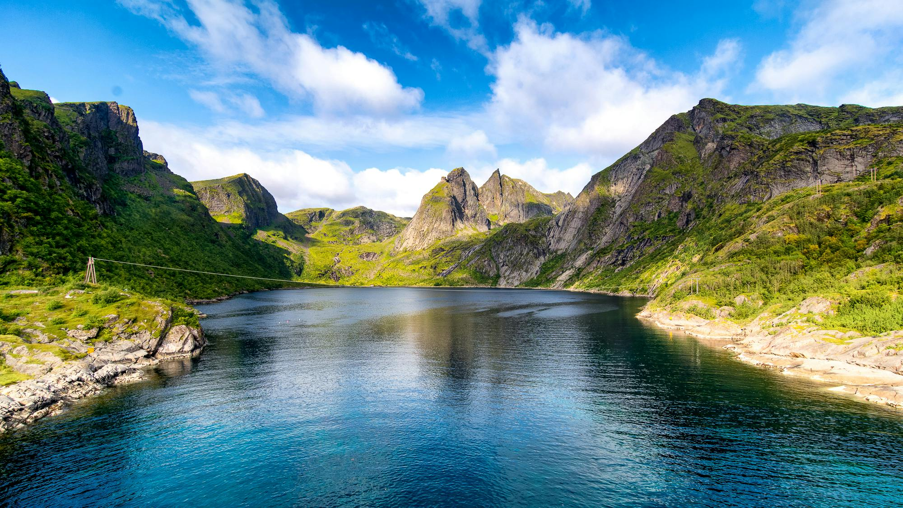
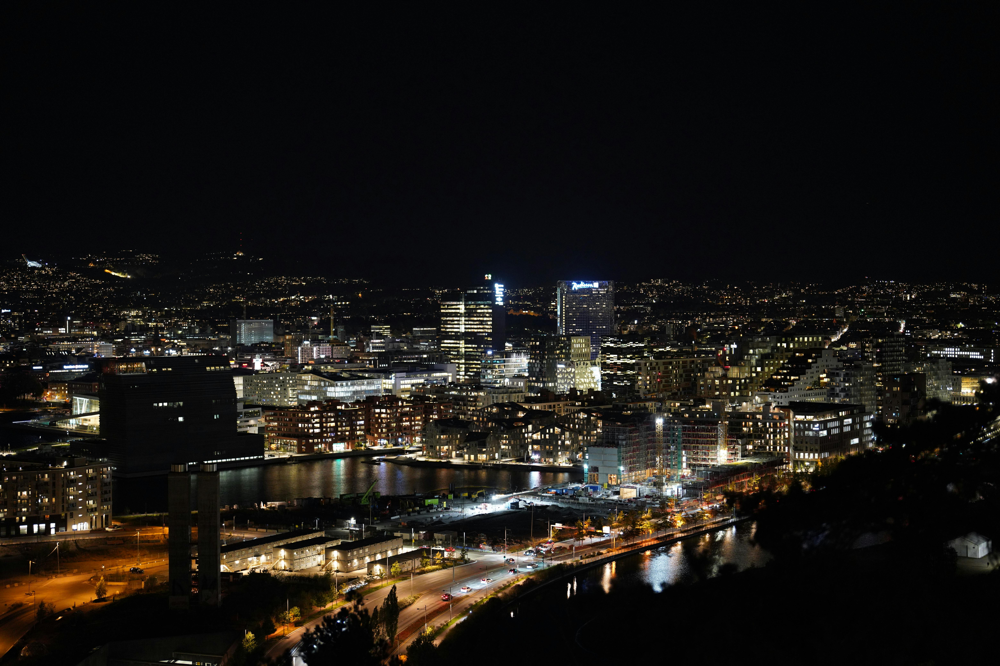
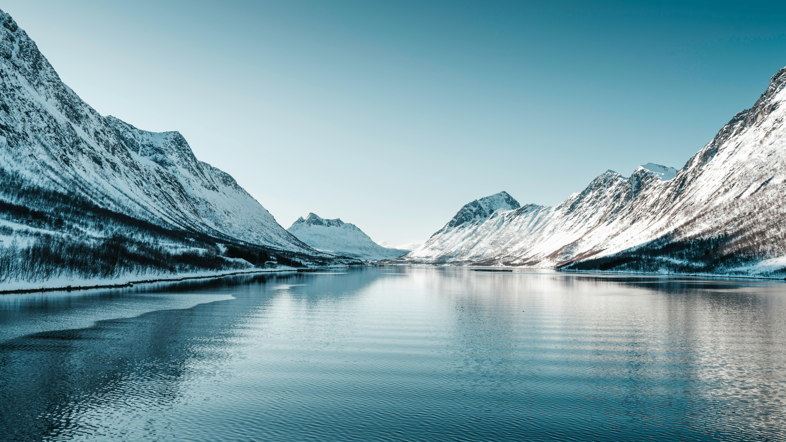
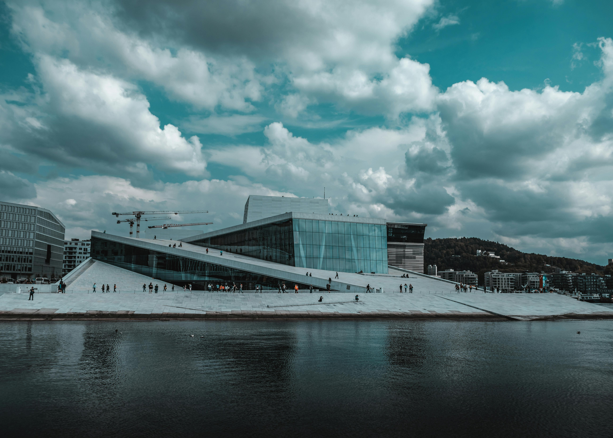

We did a weekend trip to Oslo in 2009 with friends and it was one of those cities that hits you immediately — clean, quiet, strikingly beautiful and absolutely, breathtakingly, wallet-destroyingly expensive. The Vigeland Sculpture Park with its hundreds of extraordinary naked statues, the Viking Ship Museum on the Bygdøy peninsula, the brand new Opera House roof, a sightseeing boat on the Oslofjord, reindeer hot dogs from a street kiosk and an Oslo that felt in 2009 quieter and more understated than the international city it has since become. We loved it. We just needed a second mortgage to afford it.




We went as a group of friends for a weekend — one of those city break trips that feels like an adventure before you even land. Norway had a reputation: expensive, beautiful, Viking-obsessed, outdoorsy. All of it was true. Oslo in 2009 was quieter and less internationally buzzy than it has since become — there was a sense of a city that was perfectly content being exactly what it was, not particularly trying to attract tourists, and charging whatever it liked as a result.
The city felt different to anywhere in Western Europe — cleaner in a way that was almost startling, with a Nordic minimalism to everything from the architecture to the café interiors to the way people dressed. Trams ran silently through streets with no litter. The waterfront at Aker Brygge was beautiful. And the Oslofjord — visible at the end of almost every street heading south — gave the whole city a backdrop that was unlike any capital we had visited.
We did the classic Oslo weekend itinerary — the Vigeland Sculpture Park, the Viking Ship Museum, the Opera House roof, the Bygdøy peninsula museums, a fjord sightseeing boat, a wander along Karl Johans gate and the harbour. And between every activity, the slow dawning realisation that this was going to be by a significant margin the most expensive weekend any of us had ever had.
Oslo is consistently one of the most expensive cities in the world and was already eye-watering in 2009. A round of drinks cost what a full dinner would in Dublin. A casual lunch was a significant financial event. Coffee was the price of a meal. Our advice: take full advantage of the excellent free attractions (Vigeland Park, the Opera House roof, Akershus Fortress exterior), buy food from supermarkets for lunch and save restaurant spending for one good dinner. The reindeer hot dogs from street kiosks are excellent, authentic and genuinely affordable — the best budget option in the city.
Vigeland Sculpture Park is one of the most extraordinary public art installations in the world — the life's work of Norwegian sculptor Gustav Vigeland, containing over 200 sculptures in bronze and granite depicting the full range of human experience, from birth to death, in every possible emotional state. And all of them naked. Magnificently, unapologetically, entirely naked.
The park is huge, beautifully landscaped and completely free to enter at any hour. The centrepiece is the Monolith — a 14-metre granite column carved from a single piece of stone, depicting 121 human figures writhing upwards in an extraordinary spiral. Around it, dozens of other sculptures depict couples, families, children, elderly people — all in moments of joy, conflict, grief, tenderness and pure exuberance. It is funny and moving and strange and brilliant all at once, and it is one of the great free attractions in any European capital.
The Bygdøy peninsula, a short ferry or bus ride from the city centre, is home to an extraordinary concentration of world-class museums — and the Viking Ship Museum is the reason most people make the trip.
The Viking Ship Museum houses three of the best-preserved Viking ships ever discovered — 9th-century vessels buried as funeral ships in burial mounds across Norway and excavated in the 19th and 20th centuries. The Oseberg ship in particular is extraordinary — ornately carved, almost completely intact, 21 metres long and 1,200 years old. Standing beside it and processing the fact that this actual ship once sailed across the North Sea is one of those museum experiences that genuinely stops you in your tracks. The artefacts found with the ships — sledges, beds, textiles, tools — are equally remarkable. One of the great museums in Europe.
The Fram Museum houses the actual Fram — the wooden ship that sailed further north and further south than any vessel in history, carrying Norwegian polar explorers including Fridtjof Nansen and Roald Amundsen on their extraordinary expeditions. The museum is built around the ship itself, which you can board and explore. The story of the expeditions, told through the exhibits around you, is one of the greatest adventure stories in human history.
The Kon-Tiki Museum houses the actual balsa wood raft on which Thor Heyerdahl and five companions sailed 8,000 kilometres across the Pacific Ocean in 1947 — to prove that ancient South Americans could have settled Polynesia. The raft is tiny. The ocean is enormous. The story is one of the most extraordinary feats of human courage and eccentricity in the 20th century, and the museum tells it brilliantly.
The Oslo Opera House opened in 2008 — just a year before our visit — and had immediately become one of the most celebrated buildings in modern European architecture. The design is extraordinary: a massive white marble and granite structure that appears to rise from the waters of the Oslofjord, with a sloping roof that pedestrians can walk on freely at any time. We walked up the gently angled white surface and the views over the fjord and city were spectacular. It costs nothing and is one of the great free architectural experiences in Europe. Seeing it in its first year of existence felt genuinely exciting.
Akershus Fortress is a medieval castle and fortress complex overlooking the Oslofjord — built in the 1290s and expanded and reinforced over the following centuries. The exterior and grounds are free to explore and the views over the harbour and fjord from the ramparts are excellent. It gives a real sense of Oslo's strategic importance and its long history as a Scandinavian capital.
The Aker Brygge waterfront district is Oslo's most popular gathering place — a converted shipyard now lined with restaurants, bars and shops overlooking the harbour and the Oslofjord. In 2009 it was already beautiful and lively, with Norwegians doing what Norwegians do — sitting outside regardless of temperature, in their excellent cold-weather clothing, completely unbothered by conditions that would send an Irish person back indoors immediately. The harbour views, the boats and the general atmosphere made it a brilliant place to simply sit, eat an expensive sandwich and watch Oslo life go by.
Karl Johans gate is Oslo's main pedestrianised shopping and promenade street — running from Oslo Central Station up through the city centre to the Royal Palace at the top. It is lined with shops, cafés, street performers and the grand institutional buildings of the Norwegian state — the Parliament, the National Theatre, the University. Walking its full length is the natural orientation exercise for any Oslo visit.
The little sightseeing boat trip on the Oslofjord was one of those simple experiences that turns out to be one of the best things you do on a trip. Seen from the water, Oslo makes complete sense — the city arranged around the head of the fjord, the fortress on its promontory, the hills rising behind the rooftops and the islands scattered across the water in the middle distance.
The Oslofjord is not one of Norway's dramatic western fjords — those are the ones with thousand-metre walls of rock plunging into the water — but it is beautiful in its own quieter way, and being on the water looking back at the city gives you a perspective that no amount of walking the streets can replicate. On a winter visit with low grey skies the fjord had a dramatic, slightly melancholy atmosphere that was entirely Scandinavian and entirely perfect.
Norwegian food in 2009 was brilliant when you found the right things — and eye-wateringly expensive almost everywhere. The trick, we discovered, was to eat like a Norwegian rather than like a tourist: kiosk food for lunch, supermarket runs for snacks and one good restaurant dinner where the quality justified the cost.
Norwegian smoked salmon is some of the best in the world — rich, silky and completely different to the supermarket version at home.
From street kiosks across the city — the most affordable and most authentically Norwegian food experience in Oslo. Brilliant.
Kanelbollene from Norwegian bakeries are extraordinary — warm, generously spiced and the perfect companion to an expensive Oslo coffee.
Rich, creamy seafood chowder — a Norwegian staple and genuinely delicious, especially on a cold Scandinavian day by the waterfront.
Brunost — the caramelised whey cheese served at every Norwegian hotel breakfast. Sweet, slightly odd, deeply Norwegian. Try it. You might love it.
Excellent. Very expensive. We had one round and did a quiet financial reassessment. The supermarket option is significantly more sensible.
Two hundred naked sculptures in every conceivable human situation, a 14-metre column of writhing figures and a park that is simultaneously hilarious, moving and utterly extraordinary. Free, open always and unlike anything anywhere else in the world.
Standing beside a 1,200-year-old ship that actually sailed the North Sea is one of those museum experiences that properly stops you. The Oseberg ship is extraordinary. One of the great museums in Europe.
Walking on the sloping marble roof of one of Europe's most beautiful modern buildings, with the Oslofjord spread below you and the city behind. Free, accessible at any hour and genuinely spectacular.
Seeing Oslo from the water — the fortress, the city, the hills and the islands — gives you a completely different perspective and one of the best views of the Norwegian capital. A simple experience that becomes a lasting memory.
From a street kiosk on a cold Oslo morning. The most affordable and most authentically Norwegian thing you will eat in the city. Brilliant, warming and deeply satisfying in the way that only proper street food can be.
Served at every hotel breakfast. Sweet, caramelised, entirely Norwegian and initially confusing. By day two we were converts. It is the single most Norwegian thing you will encounter and you should absolutely try it.
Norway beyond Oslo is extraordinary — the western fjords of Geirangerfjord and Nærøyfjord, the Bergen railway, the Lofoten Islands, the Northern Lights above the Arctic Circle. TourRadar has brilliant Norway itineraries from weekend Oslo breaks to full fjord country adventures.
Disclosure: This is an affiliate link. If you book through it we may earn a small commission at no extra cost to you.
Oslofjord sightseeing cruises, Viking Ship Museum guided tours, Bygdøy peninsula excursions, Oslo city walking tours, Northern Lights chases and Norwegian fjord day trips from Oslo — book in advance.
Disclosure: If you book through this link we may earn a small commission at no extra cost to you.
Klook has Oslo city tours, fjord excursions and day trip options — great for booking individual experiences around your stay.
Disclosure: This is an affiliate link. If you book through it we may earn a small commission at no extra cost to you.
Common questions
What to pack for Oslo
Oslo means layers, waterproofs and warm gear — especially outside summer. The Norwegians sit outside in any weather, but you'll want to be prepared.
Norway is not in the EU so standard EU roaming may not apply — an eSIM gives you reliable data for maps and navigation across Oslo.
View on Amazon →Non-negotiable — Oslo weather changes fast and sitting outside by the fjord Scandinavian-style requires proper layering.
View on Amazon →Karl Johans gate, Vigeland Park, Bygdøy peninsula and the Opera House roof — Oslo is a walking city and good shoes are essential.
View on Amazon →Cold weather drains phone batteries fast — a power bank keeps you going through long days of museum-hopping and fjord-gazing.
View on Amazon →For the Bygdøy museum peninsula day and city exploration — keeps your layers and snacks accessible without a full backpack.
View on Amazon →Norway uses European two-pin plugs — a universal adaptor covers all your devices.
View on Amazon →Disclosure: These are Amazon affiliate links. If you buy through them we may earn a small commission at no extra cost to you.
Oslo is the gateway to one of the world's most beautiful regions — read our other Nordic guides below.
Nordic calm, beautiful harbours, the Church in the Rock and a reindeer burger that remained on the plate. Two brilliant Nordic days.
Read the Finland guide →Hygge, harbour lights, Nyhavn and winter magic — Copenhagen is Scandinavia's most immediately loveable capital.
Read the Copenhagen guide →From Helsinki to Moscow — St Petersburg's palaces, the Hermitage, Red Square and the Kremlin. The Nordic gateway to Russia.
Read the Russia guide →Walk the Vigeland Park, stand beside a Viking ship, stroll the Opera House roof, take the fjord boat, eat a reindeer hot dog and try the brown cheese. Oslo is extraordinary — just budget carefully.
Affiliate disclosure: if you book through our links we may earn a small commission at no cost to you. We only recommend experiences we've done ourselves.